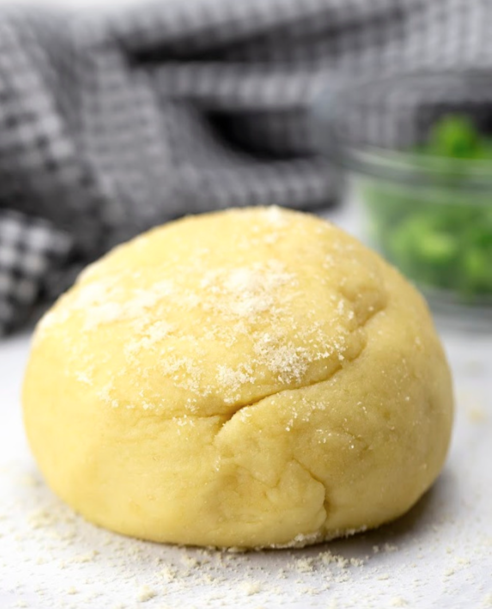

Fathead Dough

Description
Fathead dough is a keto-friendly, gluten-free dough alternative. It's simple to make and is incredibly versitile, so it can be used to create many different dishes. Some examples being:
- pizza crust
- bagels
- calzones
- cinnamon rolls
- SO MUCH MORE!
Equipment Needed:
- imperial measuring cups/spoons
- non-stick saucepan
- wooden spoon
Ingredients:
- 2 cups mozzarella cheese
- 3/4 cup almond flour
- 2 tbsp cream cheese
- 1/8 tsp salt
Directions:
- Mix all ingredients in a saucepan.
- Heat on medium-low to medium until dough is formed.
- Form ball with dough.
- Refrigerate until ready to use.